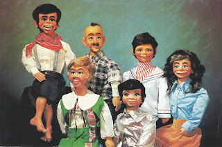
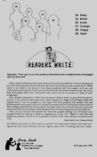

Clementine
9/10/2011
{kind=link}

From Wes Green: "If you ever run across an ad with Craig Lovik's "Clementine", I would love to see it on your blog. We bought a basswood Clementine in 1979/80. Craig sent a note saying he would not be making any more. She was a great addition to my wife's program."* * * * *
From Mr. D: "Craig sold the figures through his California Maher Workshop using photo sheets showing groups of characters. I believe there were four or five different sets of characters. I could only find two of the flyers in my files. Unfortunately, they do not picture Clementine. Maybe someone reading this does have the sheet with Clementine's photo and can email it to me. If so, I'll post it here."
* * * * *
{kind=link}

Note: On the back of each photo advertising piece some short tip about ventriloquism was included. This piece had the following taken from a Newsy Vents newsletter:Question: "How can I be sure the audience hears the words coming from my vent puppet and not from me?"
"Often vents find that very first performance to be the most difficult. This is true because you (the ventriloquist) are the one that has to be convinced you can actually do it. There is really no need to be fearful if you have practiced with the puppet until you are comfortable with it and if you are familiar with the lines you want to say. Yes, if you have thoroughly done your homework your show will be a success - in spite of your misgivings!" CD
* * * * *
From Mr. D: Just as a side note, Wes Green told me their Clementine had an every changing wardrobe thanks to their daughter. During her ages 3-6 she passed her clothes on to Clementine. The dresses that didn't button in the back were altered. Today this same daughter will soon deliver a daughter of her own. Wes says he's thinking of unpacking those "vintage" dresses of Clementine's, to give them to his daughter so she can decide if they will be as timeless as the memories he enjoys. (He has photos of both their daughter and the vent figure wearing the same dresses.)